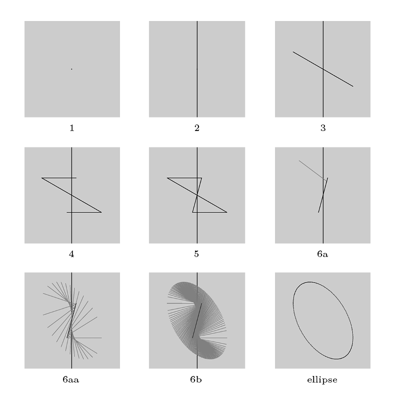

Ellipse Construction
As I was learning to draft by hand, and becoming frustrated with connect-the-dots approaches required to draw even simple circles in axonometric view, I began to dream of a tool for simplifying the process: an axonometric compass. It would have to be adjustable according to the angle of the axonometry θ, the center point of the circle C, and that circle’s radius r. I experimented with ways to reconstruct parallel-view circles from these pieces of information, and discovered that such circles are always true ellipses. Moreover, I invented a novel way to construct them, given the above quantities:
1. Draw a point at C (cf.fig 1)
2. Draw a vertical line through it (cf. fig 2)
3. Draw a line through C at angle θ from the horizontal, extending a distance r in either direction (cf. fig 3)
4. From each of its endpoints, draw a horizontal line of length r back toward the vertical; let the distance that they overhang the vertical be called “s” (cf. fig 4)
5. Connect the open endpoints of the two horizontals with a line, and call this line “L” (cf. fig 5)
6. The circle, in axonometric view, is the locus of points p such that we can draw a line of length r from p to L that is divided by the vertical into segments of length r-s and s (cf. fig 6a-b)